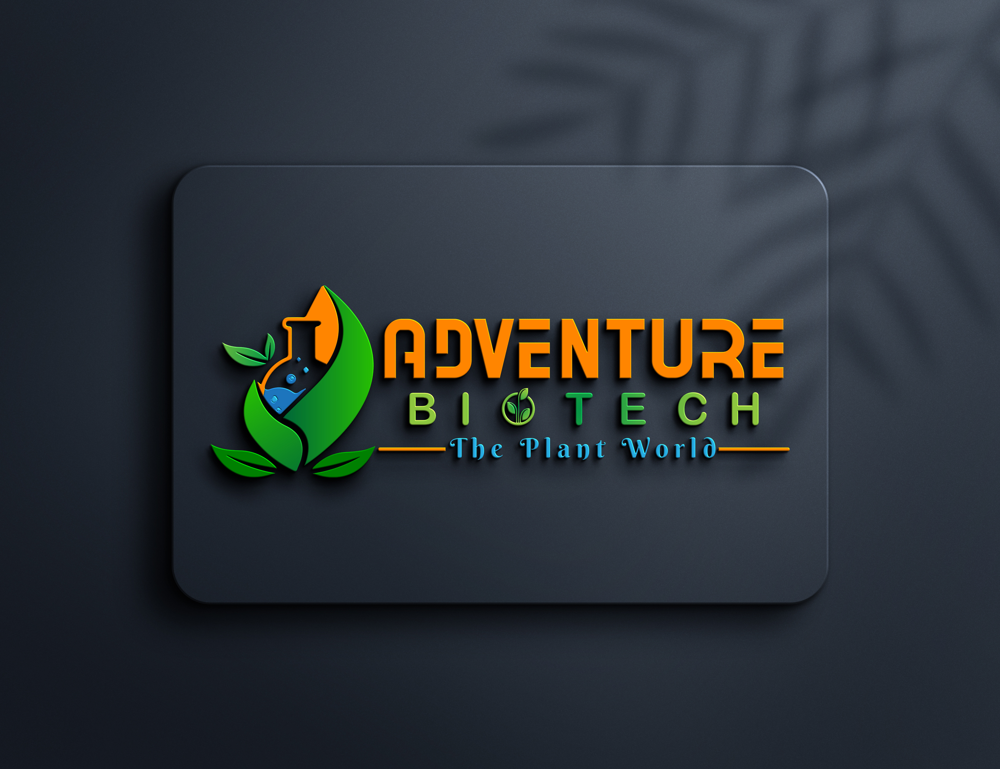
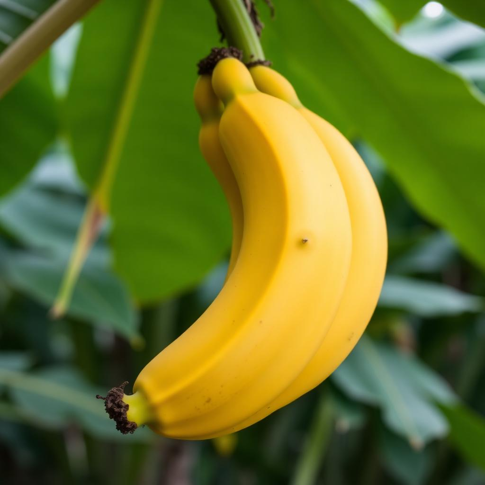
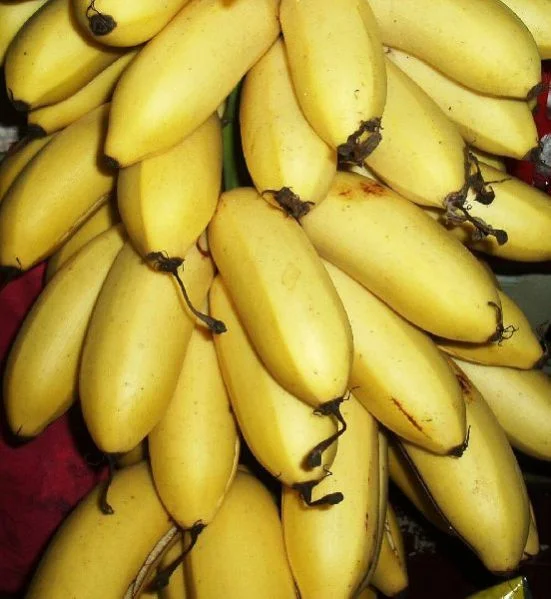
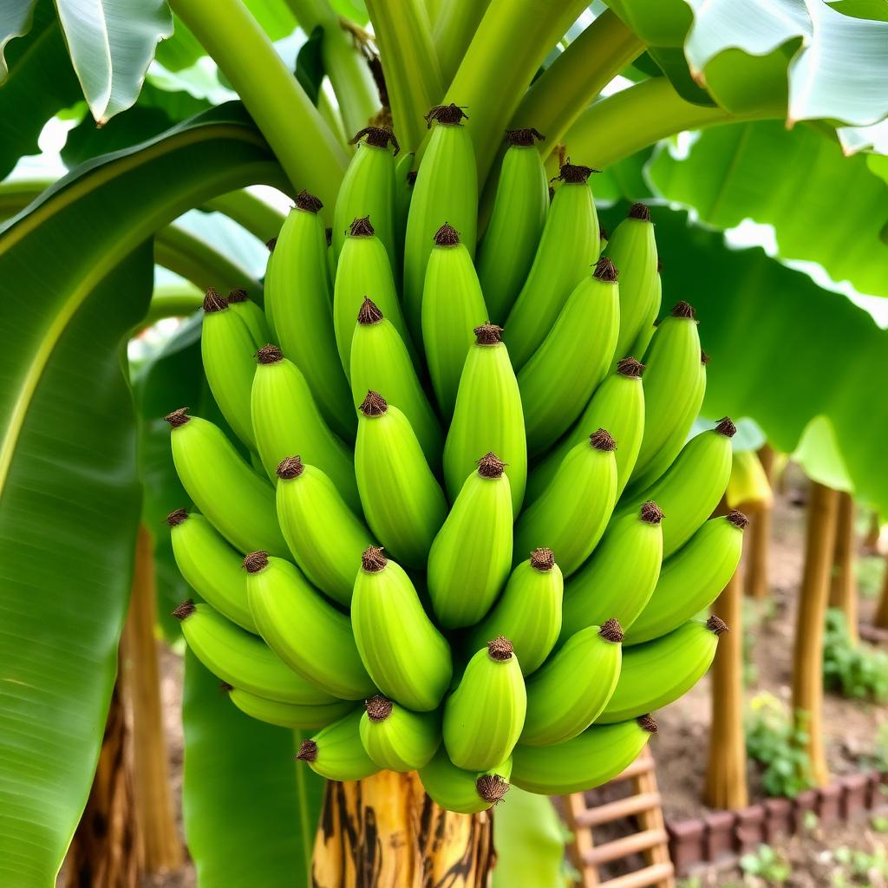
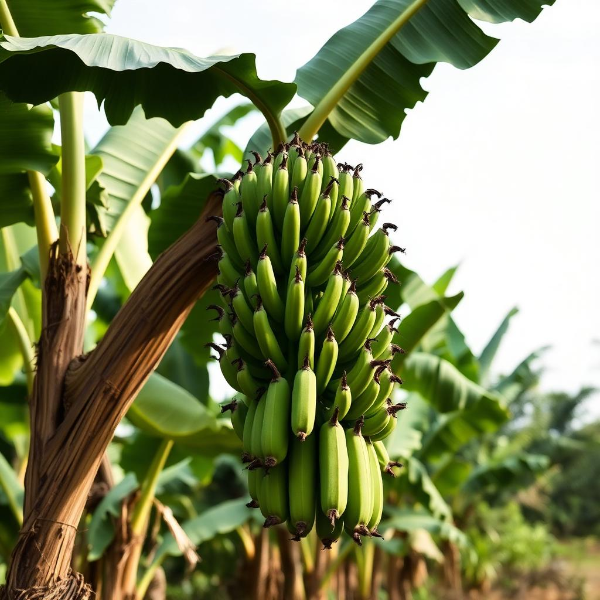

Premium Tissue Culture Banana Plants for Higher Yields and Sustainable Agriculture
Chat on WhatsApp 📞 Call NowGrowing Healthy Plants, Building Stronger Farms

Growing stronger harvests through quality tissue culture plants, Adventure Biotech is committed to empowering farmers with healthy, disease-free, and high-yielding banana plants. We specialize in the production and supply of premium tissue culture plants developed using advanced biotechnology and strict quality control standards. Our plants are genetically uniform, ensuring consistent growth, better survival rates, and improved productivity in the field. By combining scientific innovation with practical agricultural expertise, we help farmers achieve sustainable and profitable cultivation. Over the years, we have built a reputation for reliability, quality, and customer satisfaction. Our commitment to excellence and personalized support has made us a trusted partner for growers across the region.
Premium Tissue Culture Banana Plants for Better Yield

Premium quality tissue culture Yellaki plants with excellent yield and uniform growth.

Premium quality tissue culture Nanjanagud Rasabale plants with excellent yield and uniform growth.

High-yielding disease-free G9 plants suitable for commercial cultivation.

Healthy and genetically uniform Nendra plants for sustainable farming.


Everthing You Need to Know Before Planting
Tissue culture is a scientific method of producing disease-free, genetically uniform banana plants in a controlled laboratory environment.
Yes. Tissue culture promotes sustainable farming and reduces the need for pesticides while improving yields.
Unlike traditional suckers, tissue culture plants are disease-free, uniform and capable of producing higher yields.
Let's Grow Together
📍 246, Vardhaman Nagar, Hanchya, Mysore-570019, Karnataka
📞 +91 6360769331
📧 adventurebiotech@gmail.com
📸 Instagram: @adventurebiotech
🗺️ Location: Open in Google Maps

Connect With Us
Instagram
Follow us for updates, farm visits, tissue culture insights and more.
Follow UsFacebook
Stay connected with Adventure Biotech and discover our latest activities.
Follow Us